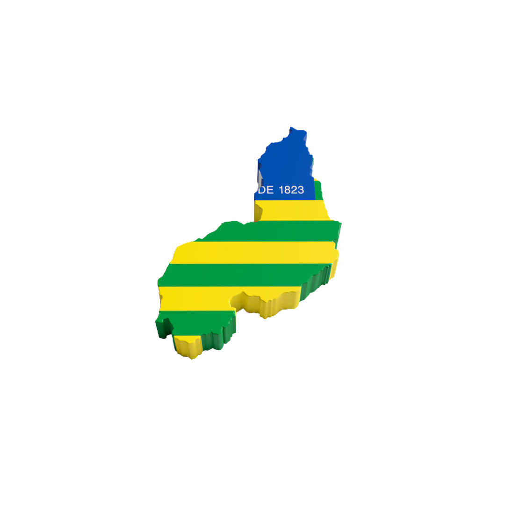

Produtos: Pesca, Sal Marinho, Turismo
Clientes: Mercados do Nordeste e Sudeste, Indústrias de alimentos e cosméticos, turistas.
Cidades: Parnaíba, Luís Correia, Piripiri
Produtos: Soja, Milho, Algodão, Pecuária
Clientes: Indústrias alimentícias e têxteis, China, União Europeia
Cidades: Bom Jesus, Corrente, Uruçuí, Gilbués, Cristino Castro
Produtos: Mel, Caju, Manga, Uva
Clientes: Indústrias alimentícias, Europa, EUA
Cidades: Picos, Altos, União, Esperantina, Floriano
Produtos: Cera de carnaúba, óleos vegetais, frutos da Caatinga
Clientes: Indústrias cosméticas, farmacêuticas, Europa e EUA
Cidades: Floriano e outras do sudoeste